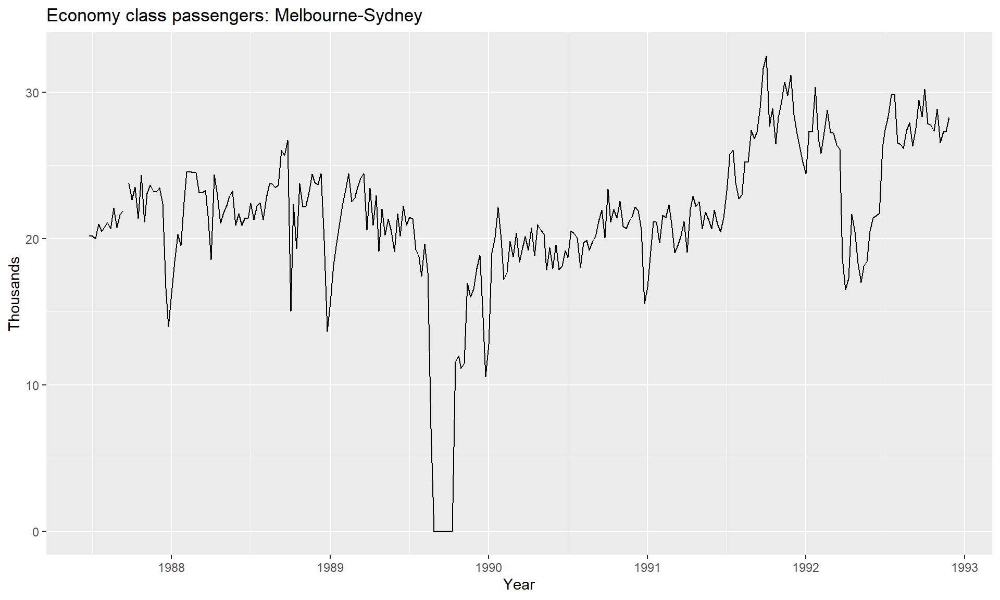
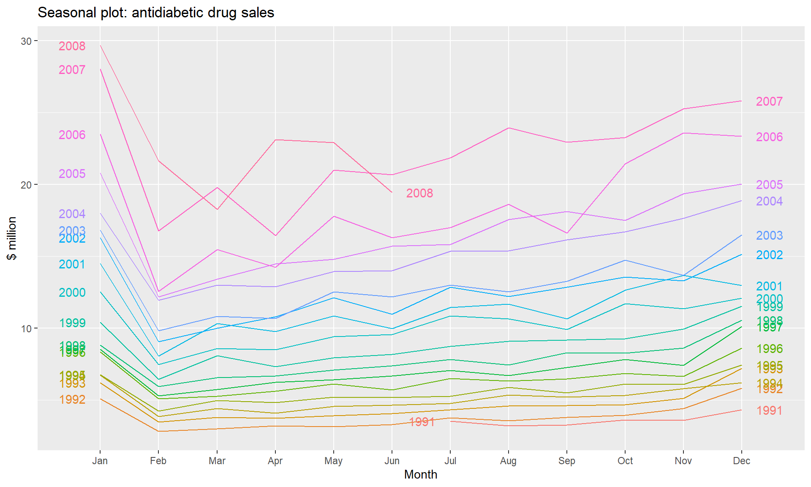
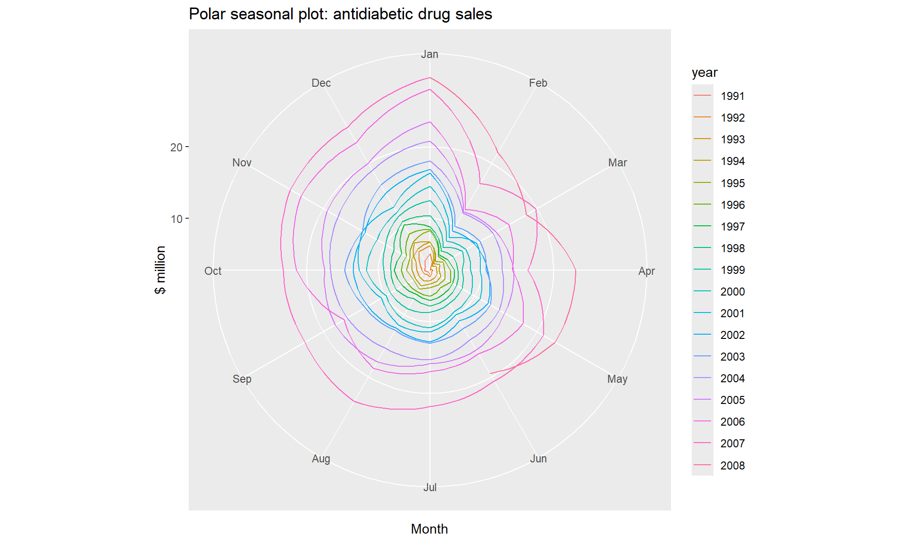
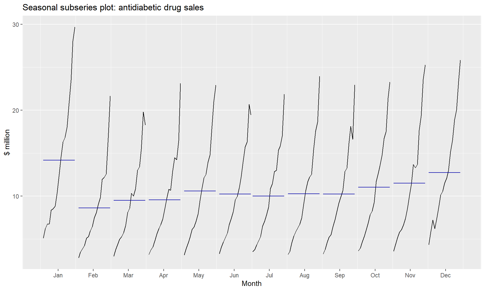
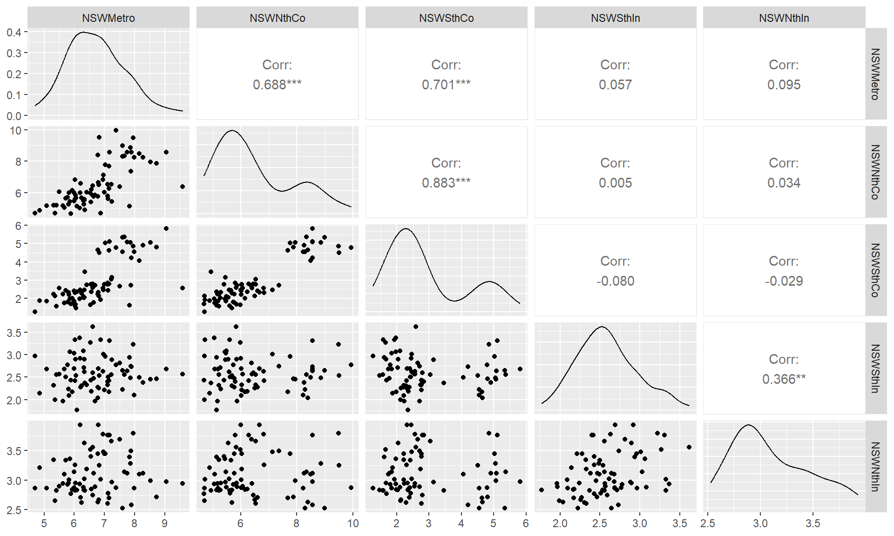
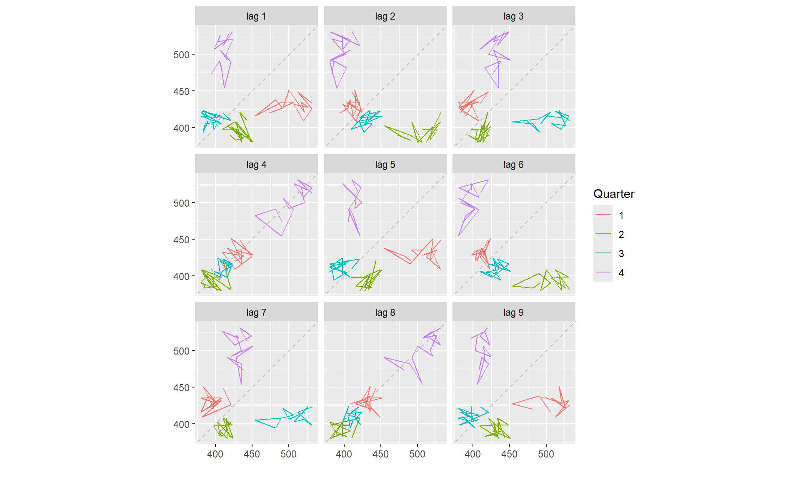

Time Series Analysis
Fundational Concepts
The purpose of time series analysis is generally twofold: to understand or model the stochastic mechanism that gives rise to an observed series and to predict or forecast the future values of a series based on the history of that series and, possibly, other related series or factors.
Means, Variances, and Covariances
For a stochastic process \[\left\{Y_{t}: t=0, \pm 1, \pm 2, \pm 3, \ldots\right\},\]
The autocovariance function, \(\gamma_{t, s}\), is defined as
\[ \gamma_{t, s}=\operatorname{Cov}\left(Y_{t}, Y_{s}\right) \quad \text { for } t, s=0, \pm 1, \pm 2, \ldots \]
where \[\operatorname{Cov}\left(Y_{t}, Y_{s}\right)=E\left[\left(Y_{t}-\mu_{t}\right)\left(Y_{s}-\mu_{s}\right)\right]=E\left(Y_{t} Y_{s}\right)-\mu_{t} \mu_{s}\]
The autocorrelation function, \(\rho_{t, s}\), is given by
\[ \rho_{t, s}=\operatorname{Corr}\left(Y_{t}, Y_{s}\right) \quad \text { for } t, s=0, \pm 1, \pm 2, \ldots \]
where
\[ \operatorname{Corr}\left(Y_{t}, Y_{s}\right)=\frac{\operatorname{Cov}\left(Y_{t}, Y_{s}\right)}{\sqrt{\operatorname{Var}\left(Y_{t}\right) \operatorname{Var}\left(Y_{s}\right)}}=\frac{\gamma_{t, s}}{\sqrt{\gamma_{t, t} \gamma_{s, s}}} \]
The following important properties follow from known results and our definitions:
\[ \left.\begin{array}{ll} \gamma_{t, t}=\operatorname{Var}\left(Y_{t}\right) & \rho_{t, t}=1 \\ \gamma_{t, s}=\gamma_{s, t} & \rho_{t, s}=\rho_{s, t} \\ \left|\gamma_{t, s}\right| \leq \sqrt{\gamma_{t, t} \gamma_{s, s}} & \left|\rho_{t, s}\right| \leq 1 \end{array}\right\} \]
Values of \(\rho_{t, s}\) near \(\pm 1\) indicate strong (linear) dependence, whereas values near zero indicate weak (linear) dependence. If \(\rho_{t, s}=0\), we say that \(Y_{t}\) and \(Y_{s}\) are uncorrelated.
Properties of covariance
To investigate the covariance properties of various time series models, the following result will be used repeatedly: If \(c_{1}, c_{2}, \ldots, c_{m}\) and \(d_{1}, d_{2}, \ldots, d_{n}\) are constants and \(t_{1}\), \(t_{2}, \ldots, t_{m}\)$ and $\(s_{1}, s_{2}, \ldots, s_{n}\) are time points, then
\[ \operatorname{Cov}\left[\sum_{i=1}^{m} c_{i} Y_{t_{i}}, \sum_{j=1}^{n} d_{j} Y_{s_{j}}\right]=\sum_{i=1}^{m} \sum_{j=1}^{n} c_{i} d_{j} \operatorname{Cov}\left(Y_{t_{i}}, Y_{s_{j}}\right) \]
As a special case, we obtain the well-known result
\[ \operatorname{Var}\left[\sum_{i=1}^{n} c_{i} Y_{t_{i}}\right]=\sum_{i=1}^{n} c_{i}^{2} \operatorname{Var}\left(Y_{t_{i}}\right)+2 \sum_{i=2}^{n} \sum_{j=1}^{i-1} c_{i} c_{j} \operatorname{Cov}\left(Y_{t_{i}}, Y_{t_{j}}\right) \] Forthermore:
\[ \begin{array}{c} \operatorname{Cov}(a+b X, c+d Y)=b d \operatorname{Cov}(X, Y) \\ \operatorname{Var}(X+Y)=\operatorname{Var}(X)+\operatorname{Var}(Y)+2 \operatorname{Cov}(X, Y) \\ \operatorname{Cov}(X+Y, Z)=\operatorname{Cov}(X, Z)+\operatorname{Cov}(Y, Z) \\ \operatorname{Cov}(X, X)=\operatorname{Var}(X) \\ \operatorname{Cov}(X, Y)=\operatorname{Cov}(Y, X) \end{array} \]
If \(X\) and \(Y\) are independent,
\[ \operatorname{Cov}(X, Y)=0 \]
The correlation coefficient of \(X\) and \(Y\), denoted by \(\operatorname{Cor}(X, Y)\) or \(\rho\), is defined as
\[ \rho=\operatorname{Corr}(X, Y)=\frac{\operatorname{Cov}(X, Y)}{\sqrt{\operatorname{Var}(X) \operatorname{Var}(Y)}} \]
Alternatively, if \(X^{*}\) is a standardized \(X\) and \(Y^{*}\) is a standardized \(Y\), then \(\rho=E\left(X^{*} Y^{*}\right) .\)
Properties of Expectation
If \(h(x)\) is a function such that \(\int_{-\infty}^{\infty}|h(x)| f(x) d x<\infty\), it may be shown that
\[ E[h(X)]=\int_{-\infty}^{\infty} h(x) f(x) d x \]
Similarly, if \(\int_{-\infty}^{\infty} \int_{-\infty}^{\infty}|h(x, y)| f(x, y) d x d y<\infty\), it may be shown that
\[ E[h(X, Y)]=\int_{-\infty}^{\infty} \int_{-\infty}^{\infty} h(x, y) f(x, y) d x d y \]
As a corollary, we easily obtain the important result
\[ E(a X+b Y+c)=a E(X)+b E(Y)+c \]
We also have
\[ E(X Y)=\int_{-\infty}^{\infty} \int_{-\infty}^{\infty} x y f(x, y) d x d y \]
The variance of a random variable \(X\) is defined as
\[ \operatorname{Var}(X)=E\left\{[X-E(X)]^{2}\right\} \]
(provided \(E\left(X^{2}\right)\) exists). The variance of \(X\) is often denoted by \(\sigma^{2}\) or \(\sigma_{X}^{2}\)
Properties of Variance
\[ \begin{array}{c} \operatorname{Var}(X) \geq 0 \\ \operatorname{Var}(a+b X)=b^{2} \operatorname{Var}(X) \end{array} \]
If \(X\) and \(Y\) are independent, then
\[ \operatorname{Var}(X+Y)=\operatorname{Var}(X)+\operatorname{Var}(Y) \]
In general, it may be shown that
\[ \operatorname{Var}(X)=E\left(X^{2}\right)-[E(X)]^{2} \]
The positive square root of the variance of \(X\) is called the standard deviation of \(X\) and is often denoted by \(\sigma\) or \(\sigma_{X}\). The random variable \(\left(X-\mu_{X}\right) / \sigma_{X}\) is called the standardized version of \(X .\) The mean and standard deviation of a standardized variable are always zero and one, respectively. The covariance of \(X\) and \(Y\) is defined as \(\operatorname{Cov}(X, Y)=E\left[\left(X-\mu_{X}\right)\left(Y-\mu_{Y}\right)\right]\).
The Random Walk
Let \(e_{1}, e_{2}, \ldots\) be a sequence of independent, identically distributed random variables each with zero mean and variance \(\sigma_{e}^{2} .\) The observed time series, \(\left\{Y_{t}: t=1,2, \ldots\right\}\), is constructed as follows:
\[ \left.\begin{array}{rl} Y_{1} & =e_{1} \\ Y_{2} & =e_{1}+e_{2} \\ & \vdots \\ Y_{t} & =e_{1}+e_{2}+\cdots+e_{t} \end{array}\right\} \]
Alternatively, we can write
\[ Y_{t}=Y_{t-1}+e_{t} \]
with “initial condition” \(Y_{1}=e_{1} .\)
The mean function is
\[ \begin{aligned} \mu_{t} &=E\left(Y_{t}\right)=E\left(e_{1}+e_{2}+\cdots+e_{t}\right)=E\left(e_{1}\right)+E\left(e_{2}\right)+\cdots+E\left(e_{t}\right) \\ &=0+0+\cdots+0 \end{aligned} \]
so that
\[ \mu_{t}=0 \quad \text { for all } t \]
The variance function is
\[ \begin{aligned} \operatorname{Var}\left(Y_{t}\right) &=\operatorname{Var}\left(e_{1}+e_{2}+\cdots+e_{t}\right)=\operatorname{Var}\left(e_{1}\right)+\operatorname{Var}\left(e_{2}\right)+\cdots+\operatorname{Var}\left(e_{t}\right) \\ &=\sigma_{e}^{2}+\sigma_{e}^{2}+\cdots+\sigma_{e}^{2} \end{aligned} \]
so that
\[ \operatorname{Var}\left(Y_{t}\right)=t \sigma_{e}^{2} \]
The covariance function is
Notice that the process variance increases linearly with time. To investigate the covariance function, suppose that \(1 \leq t \leq s .\) Then we have
\[ \gamma_{t, s}=\operatorname{Cov}\left(Y_{t}, Y_{s}\right)=\operatorname{Cov}\left(e_{1}+e_{2}+\cdots+e_{t}, e_{1}+e_{2}+\cdots+e_{t}+e_{t+1}+\cdots+e_{s}\right) \]
From Equation above, we have
\[ \gamma_{t, s}=\sum_{i=1}^{s} \sum_{j=1}^{t} \operatorname{Cov}\left(e_{i}, e_{j}\right) \]
However, these covariances are zero unless \(i=j\), in which case they equal \(\operatorname{Var}\left(e_{i}\right)=\sigma_{e}^{2}\). There are exactly \(t\) of these so that \(\gamma_{t, s}=t \sigma_{e}^{2}\).
The autocorrelation function
Since \(\gamma_{t, s}=\gamma_{s, t}\), this specifies the autocovariance function for all time points \(t\) and \(s\) and we can write
\[ \gamma_{t, s}=t \sigma_{e}^{2} \]
for \(1 \leq t \leq s\) The autocorrelation function for the random walk is now easily obtained as
\[ \rho_{t, s}=\frac{\gamma_{t, s}}{\sqrt{\gamma_{t, t} \gamma_{s, s}}}=\sqrt{\frac{t}{s}} \]
A Moving Average
As a second example, suppose that \(\left\{Y_{t}\right\}\) is constructed as
\[ Y_{t}=\frac{e_{t}+e_{t-1}}{2} \]
where (as always throughout this book) the \[e\] ’s are assumed to be independent and identically distributed with zero mean and variance \(\sigma_{e}^{2} .\) Here
\[ \begin{aligned} \mu_{t} &=E\left(Y_{t}\right)=E\left\{\frac{e_{t}+e_{t-1}}{2}\right\}=\frac{E\left(e_{t}\right)+E\left(e_{t-1}\right)}{2} =0 \end{aligned} \]
\[ \begin{aligned} \operatorname{Var}\left(Y_{t}\right) &=\operatorname{Var}\left\{\frac{e_{t}+e_{t-1}}{2}\right\}=\frac{\operatorname{Var}\left(e_{t}\right)+\operatorname{Var}\left(e_{t-1}\right)}{4} \\ &=0.5 \sigma_{e}^{2} \end{aligned} \]
\[ \begin{aligned} \operatorname{Cov}\left(Y_{t}, Y_{t-1}\right)=& \operatorname{Cov}\left\{\frac{e_{t}+e_{t-1}}{2}, \frac{e_{t-1}+e_{t-2}}{2}\right\} \\ =& \frac{\operatorname{Cov}\left(e_{t}, e_{t-1}\right)+\operatorname{Cov}\left(e_{t}, e_{t-2}\right)+\operatorname{Cov}\left(e_{t-1}, e_{t-1}\right)}{4} +\frac{\operatorname{Cov}\left(e_{t-1}, e_{t-2}\right)}{4} \\ =& \frac{\operatorname{Cov}\left(e_{t-1}, e_{t-1}\right)}{4} \quad \text { (as all the other covariances are zero) } \\ =& 0.25 \sigma_{e}^{2} \end{aligned} \]
Or
\[ \gamma_{t, t-1}=0.25 \sigma_{e}^{2} \]
for all \(t\). Furthermore,
\[ \begin{aligned} \operatorname{Cov}\left(Y_{t}, Y_{t-2}\right) &=\operatorname{Cov}\left\{\frac{e_{t}+e_{t-1}}{2}, \frac{e_{t-2}+e_{t-3}}{2}\right\} \\ &=0 \quad \text { since the } e^{\prime} \text { s are independent } \end{aligned} \]
Similarly, \(\operatorname{Cov}\left(Y_{t}, Y_{t-k}\right)=0\) for \(k>1\), so we may write
\[ \gamma_{t, s}=\left\{\begin{array}{cc} 0.5 \sigma_{e}^{2} & \text { for }|t-s|=0 \\ 0.25 \sigma_{e}^{2} & \text { for }|t-s|=1 \\ 0 & \text { for }|t-s|>1 \end{array}\right. \]
Strictly Stationarity
一般而言，时间序列被看作一个随机过程\({X_t}\)，是一列随机变量
- 严平稳：多元分布保持不变。（X1,X2,X3)是个三维随机变量，（X3,X4,X5)也是个三维随机变量，严格平稳表示任何形如（Xn-1,Xn,Xn+1)的三维随机变量分布都是一样的。当然不仅仅是三维，而是任何维的随机变量分布不变。严平稳表示的分布不随时间的改变而改变。我研究第1到第n个随机变量跟第2到第n+1个随机变量性质是一样的。最简单的例子，白噪声（正态），无论怎么取，都是期望为0，方差为1，协方差都为0的n维正态分布。
- 弱平稳：首先要有个平稳的改变但是没有任何趋势，所以任何一点t，Xt的期望是常数（通常我们让他为0），弱平稳没有分布不于时间无关这个性质（分布不随时间的改变而改变），但是弱平稳抓住了另一个不变性——相关系数。这说明什么，X1于X3的相关系数， X2与X4的相关系数都是一样的，也就是 说相关系数取决于时间间隔而非时间起始点。这是非常重要的，因为回归是研究Y依赖于X的关系，可是单一时间序列只有X没有Y，未来某时刻的t的值Xt就要依赖于它的过去信息，如果没有依赖性将无法建立模型。 通常情况下时间序列分析讨论的是弱平稳序列。
- 时间序列预处理：拿到一个观察值序列后，首先要对它的纯随机性和平稳性进行检验，这两个检验过程称之为序列的预处理。白噪声序列是没有信息可提取的平稳序列，没有进行序列分析的必要。
- 平稳性检验: 平稳即代表没有明显趋势且波动范围有限, 定义：如果时间序列在某一常数附近波动且波动范围有限，即有常数均值和常数方差，并且延迟k期的序列变量的自协方差和自相关系数是相等的或者说延迟k期的序列变量之间的影响程度是一样的，则称该序列为平稳序列。
- 检验方法：
- 时序图检验：根据平稳时间序列的均值和方差都为常数的性质，平稳序列的时序图显示该序列值始终在一个常数附近随机波动，而且波动的范围有界；如果有明显的趋势性或者周期性，那它通常不是平稳序列
- 自相关图检验：平稳序列具有短期相关性，这个性质表明对平稳序列而言通常只有近期的序列值对现时值得影响比较明显，间隔越远的过去值对现时值得影响越小。随着延迟期数k的增加，平稳序列的自相关系数会比较快的衰减趋向于零，并在零附近随机波动，而非平稳序列的自相关系数衰减的速度比较慢。
- 单位根检验。指的是是否存在单位根，如果存在单位根，即为非平稳时间序列
- 按照下图进行判断

assumption is that of stationarity. The basic idea of stationarity is that the probability laws that govern the behavior of the process do not change over time. In a sense, the process is in statistical equilibrium. Specifically, a process \(\left\{Y_{t}\right\}\) is said to be strictly stationary if the joint distribution of \(Y_{t_{1}}, Y_{t_{2}}, \ldots, Y_{t_{n}}\) is the same as the joint distribution of \(Y_{t_{1}-k} Y_{t_{2}-k}, \ldots, Y_{t_{n}-k}\) for all choices of time points \(t_{1}, t_{2}, \ldots, t_{n}\) and all choices of time lag \(k\).
Thus, when \(n=1\) the (univariate) distribution of \(Y_{t}\) is the same as that of \(Y_{t-k}\) for all \(t\) and \(k\); in other words, the \(Y\) ’s are (marginally) identically distributed. It then follows that \(E\left(Y_{t}\right)=E\left(Y_{t-k}\right)\) for all \(t\) and \(k\) so that the mean function is constant for all time. Additionally, \(\operatorname{Var}\left(Y_{t}\right)=\operatorname{Var}\left(Y_{t-k}\right)\) for all \(t\) and \(k\) so that the variance is also constant over time.
Setting \(n=2\) in the stationarity definition we see that the bivariate distribution of \(Y_{t}\) and \(Y_{s}\) must be the same as that of \(Y_{t-k}\) and \(Y_{s-k}\) from which it follows that \(\operatorname{Cov}\left(Y_{t}, Y_{s}\right)\) \(=\operatorname{Cov}\left(Y_{t-k}, Y_{s-k}\right)\) for all \(t, s\), and \(k\). Putting \(k=s\) and then \(k=t\), we obtain \[ \begin{aligned} \gamma_{t, s} &=\operatorname{Cov}\left(Y_{t-s}, Y_{0}\right) \\ &=\operatorname{Cov}\left(Y_{0}, Y_{s-t}\right) \\ &=\operatorname{Cov}\left(Y_{0}, Y_{|t-s|}\right) \\ &=\gamma_{0,|t-s|} \end{aligned} \]
That is, the covariance between \(Y_{t}\) and \(Y_{s}\) depends on time only through the time difference \(|t-s|\) and not otherwise on the actual times \(t\) and \(s\). Thus, for a stationary process, we can simplify our notation and write \[ \gamma_{k}=\operatorname{Cov}\left(Y_{t}, Y_{t-k}\right) \quad \text { and } \quad \rho_{k}=\operatorname{Corr}\left(Y_{t}, Y_{t-k}\right) \] Note also that \[ \rho_{k}=\frac{\gamma_{k}}{\gamma_{0}} \] The general properties given in Equation now become \[ \left.\begin{array}{ll} \gamma_{0}=\operatorname{Var}\left(Y_{t}\right) & \rho_{0}=1 \\ \gamma_{k}=\gamma_{-k} & \rho_{k}=\rho_{-k} \\ \left|\gamma_{k}\right| \leq \gamma_{0} & \left|\rho_{k}\right| \leq 1 \end{array}\right\} \] If a process is strictly stationary and has finite variance, then the covariance function must depend only on the time lag.
Weakly (or second-order) stationary
A stochastic process \[\left\{Y_{t}\right\}\]** is said to be weakly (or second-order) stationary if
- The mean function is constant over time, and
- for all time \[t\] and lag \(k\)
\[ \gamma_{t, t-k}=\gamma_{0, k} \]
White Noise
A very important example of a stationary process is the so-called white noise process, which is defined as a sequence of independent, identically distributed random variables \(\left\{e_{t}\right\}\). Its importance stems not from the fact that it is an interesting model itself but from the fact that many useful processes can be constructed from white noise. The fact that \(\left\{e_{t}\right\}\) is strictly stationary is easy to see since
\(\operatorname{Pr}\left(e_{t_{1}} \leq x_{1}, e_{t_{2}} \leq x_{2}, \ldots, e_{t_{n}} \leq x_{n}\right)\) \(=\operatorname{Pr}\left(e_{t_{1}} \leq x_{1}\right) \operatorname{Pr}\left(e_{t_{2}} \leq x_{2}\right) \cdots \operatorname{Pr}\left(e_{t_{n}} \leq x_{n}\right) \quad\) (by independence) \(=\operatorname{Pr}\left(e_{t_{1}-k} \leq x_{1}\right) \operatorname{Pr}\left(e_{t_{2}-k} \leq x_{2}\right) \cdots \operatorname{Pr}\left(e_{t_{n}-k} \leq x_{n}\right)\) \(=\operatorname{Pr}\left(e_{t_{1}-k} \leq x_{1}, e_{t_{2}-k} \leq x_{2}, \ldots, e_{t_{n}-k} \leq x_{n}\right)\) (identical distributions) (by independence)
as required. Also, \(\mu_{t}=E\left(e_{t}\right)\) is constant and \[ \gamma_{k}=\left\{\begin{array}{cl} \operatorname{Var}\left(e_{t}\right) & \text { for } k=0 \\ 0 & \text { for } k \neq 0 \end{array}\right. \] Alternatively, we can write \[ \rho_{k}=\left\{\begin{array}{ll} 1 & \text { for } k=0 \\ 0 & \text { for } k \neq 0 \end{array}\right. \] The term white noise arises from the fact that a frequency analysis of the model shows that, in analogy with white light, all frequencies enter equally. We usually assume that the white noise process has mean zero and denote \(\operatorname{Var}\left(e_{t}\right)\) by \(\sigma_{e}^{2}\).
The moving average example, \(Y_{t}=\left(e_{t}+e_{t-1}\right) / 2\), is another example of a stationary process constructed from white noise. In our new notation, we have for the moving average process that \[ \rho_{k}=\left\{\begin{array}{ll} 1 & \text { for } k=0 \\ 0.5 & \text { for }|k|=1 \\ 0 & \text { for }|k| \geq 2 \end{array}\right. \]
Deterministic Versus Stochastic Trends
In a general time series, the mean function is a totally arbitrary function of time. In a stationary time series, the mean function must be constant in time. Frequently we need to take the middle ground and consider mean functions that are relatively simple (but not constant) functions of time.
We might assume that \(X_{t}\), the unobserved variation around \(\mu_{t}\), has zero mean for all \(t\) so that indeed \(\mu_{t}\) is the mean function for the observed series \(Y_{t} .\) We could describe this model as having a deterministic trend as opposed to the stochastic trend considered earlier. In other situations we might hypothesize a deterministic trend that is linear in time (that is, \(\left.\mu_{t}=\beta_{0}+\beta_{1} t\right)\) or perhaps a quadratic time trend, \(\mu_{t}=\beta_{0}+\beta_{1} t+\beta_{2} t^{2}\). Note that an implication of the model \(Y_{t}=\mu_{t}+X_{t}\) with \(E\left(X_{t}\right)=0\) for all \(t\) is that the deterministic trend \(\mu_{t}\) applies for all time. Thus, if \(\mu_{t}=\beta_{0}+\beta_{1} t\), we are assuming that the same linear time trend applies forever. We should therefore have good reasons for assuming such a model-not just because the series looks somewhat linear over the time period observed.
ARMA models
MODELS FOR STATIONARY TIME SERIES
General Linear Processes
A general linear process, \(\left\{Y_{t}\right\}\), is one that can be represented as a weighted linear combination of present and past white noise terms as \[ Y_{t}=e_{t}+\psi_{1} e_{t-1}+\psi_{2} e_{t-2}+\cdots \] If the right-hand side of this expression is truly an infinite series, then certain conditions must be placed on the \(\psi\)-weights for the right-hand side to be meaningful mathematically. For our purposes, it suffices to assume that \[ \sum_{i=1}^{\infty} \psi_{i}^{2}<\infty \] We should also note that since \(\left\{e_{t}\right\}\) is unobservable, there is no loss in the generality of Equation (4.1.2) if we assume that the coefficient on \(e_{t}\) is 1 ; effectively, \(\psi_{0}=1\)
- \(\left\{Y_{t}\right\}\) denote the observed time series.
- \(\left\{e_{t}\right\}\) represent an unobserved white noise series, that is, a sequence of identically distributed, zero-mean, independent random variables.
- the assumption of independence could be replaced by the weaker assumption that the \(\left\{e_{t}\right\}\) are uncorrelated random variables
An important nontrivial example to which we will return often is the case where the \(\psi\) is form an exponentially decaying sequence \[ \psi_{j}=\phi^{j} \] where \(\phi\) is a number strictly between \(-1\) and \(+1\). Then \[ Y_{t}=e_{t}+\phi e_{t-1}+\phi^{2} e_{t-2}+\cdots \] For this example, \[ E\left(Y_{t}\right)=E\left(e_{t}+\phi e_{t-1}+\phi^{2} e_{t-2}+\cdots\right)=0 \]
so that \(\left\{Y_{t}\right\}\) has a constant mean of zero. Also, \[ \begin{aligned} \operatorname{Var}\left(Y_{t}\right) &=\operatorname{Var}\left(e_{t}+\phi e_{t-1}+\phi^{2} e_{t-2}+\cdots\right) \\ &=\operatorname{Var}\left(e_{t}\right)+\phi^{2} \operatorname{Var}\left(e_{t-1}\right)+\phi^{4} \operatorname{Var}\left(e_{t-2}\right)+\cdots \\ &=\sigma_{e}^{2}\left(1+\phi^{2}+\phi^{4}+\cdots\right) \\ &=\frac{\sigma_{e}^{2}}{1-\phi^{2}} \text { (by summing a geometric series) } \end{aligned} \] Furthermore, \[ \begin{aligned} \operatorname{Cov}\left(Y_{t}, Y_{t-1}\right) &=\operatorname{Cov}\left(e_{t}+\phi e_{t-1}+\phi^{2} e_{t-2}+\cdots, e_{t-1}+\phi e_{t-2}+\phi^{2} e_{t-3}+\cdots\right) \\ &=\operatorname{Cov}\left(\phi e_{t-1}, e_{t-1}\right)+\operatorname{Cov}\left(\phi^{2} e_{t-2}, \phi e_{t-2}\right)+\cdots \\ &=\phi \sigma_{e}^{2}+\phi^{3} \sigma_{e}^{2}+\phi^{5} \sigma_{e}^{2}+\cdots \\ &=\phi \sigma_{e}^{2}\left(1+\phi^{2}+\phi^{4}+\cdots\right) \\ &=\frac{\phi \sigma_{e}^{2}}{1-\phi^{2}} \text { (again summing a geometric series) } \end{aligned} \] Thus \[ \operatorname{Corr}\left(Y_{t}, Y_{t-1}\right)=\left[\frac{\phi \sigma_{e}^{2}}{1-\phi^{2}}\right] /\left[\frac{\sigma_{e}^{2}}{1-\phi^{2}}\right]=\phi \] In a similar manner, we can find \(\operatorname{Cov}\left(Y_{t}, Y_{t-k}\right)=\frac{\phi^{k} \sigma_{e}^{2}}{1-\phi^{2}}\) and thus \[ \operatorname{Corr}\left(Y_{t}, Y_{t-k}\right)=\phi^{k} \]
The process defined in this way is stationary—the autocovariance structure depends only on time lag and not on absolute time
Moving Average Processes
\[ Y_{t}=e_{t}-\theta_{1} e_{t-1}-\theta_{2} e_{t-2}-\cdots-\theta_{q} e_{t-q} \] We call such a series a moving average of order \(q\) and abbreviate the name to \(\operatorname{MA}(q)\).
\(Y_{t}\) is obtained by applying the weights \(1,-\theta_{1},-\theta_{2}, \ldots,-\theta_{q}\) to the variables \(e_{t}, e_{t-1}, e_{t-2}, \ldots, e_{t-q}\) and then moving the weights and applying them to \(e_{t+1}, e_{t}, e_{t-1}, \ldots, e_{t-q+1}\) to obtain \(Y_{t+1}\) and so on. Moving average models were first considered by Slutsky (1927) and Wold (1938).
MA(1): The First-Order Moving Average Process
It is instructive to rederive the results. The model is \[ Y_{t}=e_{t}-\theta e_{t-1} \]
### Sample Path of an AR(1) Process
par(mfrow = c(2,1))
plot(arima.sim(list(order=c(0,0,1), ma=.9), n=100), ylab="x",
main=(expression(MA(1)~~~theta==+.5)))
plot(arima.sim(list(order=c(0,0,1), ma=-.9), n=100), ylab="x",
main=(expression(MA(1)~~~theta==-.5)))%20Process-1.png)
only one \(\theta\) is involved, so drop the redundant subscript 1. Clearly \(E\left(Y_{t}\right)=0\) and \(\operatorname{Var}\left(Y_{t}\right)=\sigma_{e}^{2}\left(1+\theta^{2}\right) .\) Now \[ \begin{aligned} \operatorname{Cov}\left(Y_{t}, Y_{t-1}\right) &=\operatorname{Cov}\left(e_{t}-\theta e_{t-1}, e_{t-1}-\theta e_{t-2}\right) \\ &=\operatorname{Cov}\left(-\theta e_{t-1}, e_{t-1}\right)=-\theta \sigma_{e}^{2} \end{aligned} \] and \[ \begin{aligned} \operatorname{Cov}\left(Y_{t}, Y_{t-2}\right) &=\operatorname{Cov}\left(e_{t}-\theta e_{t-1}, e_{t-2}-\theta e_{t-3}\right) \\ &=0 \end{aligned} \] since there are no \(e\) ’s with subscripts in common between \(Y_{t}\) and \(Y_{t-2}\). Similarly, \(\operatorname{Cov}\left(Y_{t}, Y_{t-k}\right)=0\) whenever \(k \geq 2\);
the process has no correlation beyond lag 1.
In summary for an MA(1) model \(Y_{t}=e_{t}-\theta e_{t-1}\) \[ \left.\begin{array}{rl} E\left(Y_{t}\right) & =0 \\ \gamma_{0} & =\operatorname{Var}\left(Y_{t}\right)=\sigma_{e}^{2}\left(1+\theta^{2}\right) \\ \gamma_{1} & =-\theta \sigma_{e}^{2} \\ \rho_{1} & =(-\theta) /\left(1+\theta^{2}\right) \\ \gamma_{k} & =\rho_{k}=0 \quad \text { for } k \geq 2 \end{array}\right\} \]
MA(2): The Second-Order Moving Average Process
Consider the moving average process of order 2 : \[ Y_{t}=e_{t}-\theta_{1} e_{t-1}-\theta_{2} e_{t-2} \] Here \[ \begin{aligned} \gamma_{0} &=\operatorname{Var}\left(Y_{t}\right)=\operatorname{Var}\left(e_{t}-\theta_{1} e_{t-1}-\theta_{2} e_{t-2}\right)=\left(1+\theta_{1}^{2}+\theta_{2}^{2}\right) \sigma_{e}^{2} \\ \gamma_{1} &=\operatorname{Cov}\left(Y_{t}, Y_{t-1}\right)=\operatorname{Cov}\left(e_{t}-\theta_{1} e_{t-1}-\theta_{2} e_{t-2}, e_{t-1}-\theta_{1} e_{t-2}-\theta_{2} e_{t-3}\right) \\ &=\operatorname{Cov}\left(-\theta_{1} e_{t-1}, e_{t-1}\right)+\operatorname{Cov}\left(-\theta_{1} e_{t-2},-\theta_{2} e_{t-2}\right) \\ &=\left[-\theta_{1}+\left(-\theta_{1}\right)\left(-\theta_{2}\right)\right] \sigma_{e}^{2} \\ &=\left(-\theta_{1}+\theta_{1} \theta_{2}\right) \sigma_{e}^{2} \end{aligned} \] \[ \begin{aligned} \gamma_{2} &=\operatorname{Cov}\left(Y_{t}, Y_{t-2}\right)=\operatorname{Cov}\left(e_{t}-\theta_{1} e_{t-1}-\theta_{2} e_{t-2}, e_{t-2}-\theta_{1} e_{t-3}-\theta_{2} e_{t-4}\right) \\ &=\operatorname{Cov}\left(-\theta_{2} e_{t-2}, e_{t-2}\right) \\ &=-\theta_{2} \sigma_{e}^{2} \end{aligned} \] Thus, for an MA(2) process, \[ \begin{array}{l} \rho_{1}=\frac{-\theta_{1}+\theta_{1} \theta_{2}}{1+\theta_{1}^{2}+\theta_{2}^{2}} \\ \rho_{2}=\frac{-\theta_{2}}{1+\theta_{1}^{2}+\theta_{2}^{2}} \\ \rho_{k}=0 \text { for } k=3,4, \ldots \end{array} \] For the specific case \(Y_{t}=e_{t}-e_{t-1}+0.6 e_{t-2}\), we have \[ \rho_{1}=\frac{-1+(1)(-0.6)}{1+(1)^{2}+(-0.6)^{2}}=\frac{-1.6}{2.36}=-0.678 \] \[ \rho_{2}=\frac{0.6}{2.36}=0.254 \]
The General MA(q) Process
For the general \(\operatorname{MA}(q)\) process \(Y_{t}=e_{t}-\theta_{1} e_{t-1}-\theta_{2} e_{t-2}-\cdots-\theta_{q} e_{t-q}\), similar calculations show that \[ \gamma_{0}=\left(1+\theta_{1}^{2}+\theta_{2}^{2}+\cdots+\theta_{q}^{2}\right) \sigma_{e}^{2} \] and \[ \rho_{k}=\left\{\begin{array}{l} \frac{-\theta_{k}+\theta_{1} \theta_{k+1}+\theta_{2} \theta_{k+2}+\cdots+\theta_{q-k} \theta_{q}}{1+\theta_{1}^{2}+\theta_{2}^{2}+\cdots+\theta_{q}^{2}} \quad \text { for } k=1,2, \ldots, q \\ 0 \quad \text { for } k>q \end{array}\right. \] where the numerator of \(\rho_{q}\) is just \(-\theta_{q} .\) The autocorrelation function “cuts off’ after lag \(q\); that is, it is zero. Its shape can be almost anything for the earlier lags.
Autoregressive Processes
A \(p\) th-order autoregressive process \(\left\{Y_{t}\right\}\) satisfies the equation \[ Y_{t}=\phi_{1} Y_{t-1}+\phi_{2} Y_{t-2}+\cdots+\phi_{p} Y_{t-p}+e_{t} \] The current value of the series \(Y_{t}\) is a linear combination of the \(p\) most recent past values of itself plus an “innovation” term \(e_{t}\) that incorporates everything new in the series at time \(t\) that is not explained by the past values. Thus, for every \(t\), we assume that \(e_{t}\) is independent of \(Y_{t-1}, Y_{t-2}, Y_{t-3}, \ldots .\) Yule (1926) carried out the original work on autoregressive processes.
AR(1): The First-Order Autoregressive Process
Assume the series is stationary and satisfies \[ Y_{t}=\phi Y_{t-1}+e_{t} \]
### Sample Path of an AR(1) Process
par(mfrow=c(2,1))
plot(arima.sim(list(order=c(1,0,0), ar=.9), n=100), ylab="x",
main=(expression(AR(1)~~~phi==+.9)))
plot(arima.sim(list(order=c(1,0,0), ar=-.9), n=100), ylab="x",
main=(expression(AR(1)~~~phi==-.9)))%20Process-1.png)
We first take variances of both sides above and obtain \[ \gamma_{0}=\phi^{2} \gamma_{0}+\sigma_{e}^{2} \] Solving for \(\gamma_{0}\) yields \[ \gamma_{0}=\frac{\sigma_{e}^{2}}{1-\phi^{2}} \] \[ \gamma_{k}=\phi \gamma_{k-1} \quad \text { for } k=1,2,3, \ldots \] Setting \(k=1\), we get \(\gamma_{1}=\phi \gamma_{0}=\phi \sigma_{e}^{2} /\left(1-\phi^{2}\right) .\) With \(k=2\), we obtain \(\gamma_{2}=\) \(\phi^{2} \sigma_{e}^{2} /\left(1-\phi^{2}\right)\). Now it is easy to see that in general \[ \gamma_{k}=\phi^{k} \frac{\sigma_{e}^{2}}{1-\phi^{2}} \] and thus \[ \rho_{k}=\frac{\gamma_{k}}{\gamma_{0}}=\phi^{k} \quad \text { for } k=1,2,3, \ldots \] Since \(|\phi|<1\), the magnitude of the autocorrelation function decreases exponentially as the number of lags, \(k\), increases. If \(0<\phi<1\), all correlations are positive; if \(-1<\phi<0\), the lag 1 autocorrelation is negative \(\left(\rho_{1}=\phi\right)\) and the signs of successive autocorrelations alternate from positive to negative, with their magnitudes decreasing exponentially.
Recursive definition of the AR(1) process
The recursive definition is valid for all \(t .\) If we use this equation with \(t\) replaced by \(t-1\), we get \(Y_{t-1}=\) \(\phi Y_{t-2}+e_{t-1} .\) Substituting this into the original expression gives \[ \begin{aligned} Y_{t} &=\phi\left(\phi Y_{t-2}+e_{t-1}\right)+e_{t} \\ &=e_{t}+\phi e_{t-1}+\phi^{2} Y_{t-2} \end{aligned} \] If we repeat this substitution into the past, say \(k-1\) times, we get \[ Y_{t}=e_{t}+\phi e_{t-1}+\phi^{2} e_{t-2}+\cdots+\phi^{k-1} e_{t-k+1}+\phi^{k} Y_{t-k} \] Assuming \(|\phi|<1\) and letting \(k\) increase without bound, it seems reasonable (this is almost a rigorous proof) that we should obtain the infinite series representation \[ Y_{t}=e_{t}+\phi e_{t-1}+\phi^{2} e_{t-2}+\phi^{3} e_{t-3}+\cdots \]
we should note that the autocorrelation function for the AR(1) process has been derived in two different ways. The first method used the general linear process representation. The second method used the defining recursion.
AR(2): The Second-Order Autoregressive Process
Now consider the series satisfying \[ Y_{t}=\phi_{1} Y_{t-1}+\phi_{2} Y_{t-2}+e_{t} \] where, as usual, we assume that \(e_{t}\) is independent of \(Y_{t-1}, Y_{t-2}, Y_{t-3}, \ldots .\) To discuss stationarity, we introduce the AR characteristic polynomial \[ \phi(x)=1-\phi_{1} x-\phi_{2} x^{2} \] and the corresponding AR characteristic equation \[ 1-\phi_{1} x-\phi_{2} x^{2}=0 \] We recall that a quadratic equation always has two roots (possibly complex).
In the second-order case, the roots of the quadratic characteristic equation are easily found to be \[ \frac{\phi_{1} \pm \sqrt{\phi_{1}^{2}+4 \phi_{2}}}{-2 \phi_{2}} \] For stationarity, we require that these roots exceed 1 in absolute value. This will be true if and only if three conditions are satisfied: \[ \phi_{1}+\phi_{2}<1, \quad \phi_{2}-\phi_{1}<1, \quad \text { and } \quad\left|\phi_{2}\right|<1 \] As with the AR(1) model, we call these the stationarity conditions for the AR(2) model. This stationarity region is displayed in the following.

Stationarity Parameter Region for AR(2) Process
Autocorrelation Function for the AR(2) Process
Assuming stationarity, zero means, and that \(e_{t}\) is independent of \(Y_{t-k}\), we get \[ \gamma_{k}=\phi_{1} \gamma_{k-1}+\phi_{2} \gamma_{k-2} \quad \text { for } k=1,2,3, \ldots \] or, dividing through by \(\gamma_{0}\), \[ \rho_{k}=\phi_{1} \rho_{k-1}+\phi_{2} \rho_{k-2} \quad \text { for } k=1,2,3, \ldots \] the two equations are usually called the Yule-Walker equations, especially the set of two equations obtained for \(k=1\) and \(2 .\) Setting \(k=1\) and using \(\rho_{0}=1\) and \(\rho_{-1}=\rho_{1}\), we get \(\rho_{1}=\phi_{1}+\phi_{2} \rho_{1}\) and so \[ \rho_{1}=\frac{\phi_{1}}{1-\phi_{2}} \] Using the now known values for \(\rho_{1}\) (and \(\rho_{0}\) ), Equation \(\rho_{k}=\phi_{1} \rho_{k-1}+\phi_{2} \rho_{k-2} \quad \text { for } k=1,2,3, \ldots\) can be used with \(k=2\) to obtain \[ \begin{aligned} \rho_{2} &=\phi_{1} \rho_{1}+\phi_{2} \rho_{0} \\ &=\frac{\phi_{2}\left(1-\phi_{2}\right)+\phi_{1}^{2}}{1-\phi_{2}} \end{aligned} \] Successive values of \(\rho_{k}\) may be easily calculated numerically from the recursive relationship
The Variance for the AR(2) Model
Taking the variance of both sides of Equation \(Y_{t}=\phi_{1} Y_{t-1}+\phi_{2} Y_{t-2}+e_{t}\) yields \[ \gamma_{0}=\left(\phi_{1}^{2}+\phi_{2}^{2}\right) \gamma_{0}+2 \phi_{1} \phi_{2} \gamma_{1}+\sigma_{e}^{2} \] \[ \begin{aligned} \gamma_{0} &=\frac{\left(1-\phi_{2}\right) \sigma_{e}^{2}}{\left(1-\phi_{2}\right)\left(1-\phi_{1}^{2}-\phi_{2}^{2}\right)-2 \phi_{2} \phi_{1}^{2}} \\ &=\left(\frac{1-\phi_{2}}{1+\phi_{2}}\right) \frac{\sigma_{e}^{2}}{\left(1-\phi_{2}\right)^{2}-\phi_{1}^{2}} \end{aligned} \]
The Mixed Autoregressive Moving Average Model
If we assume that the series is partly autoregressive and partly moving average, we obtain a quite general time series model. In general, if \[ \begin{array}{r} Y_{t}=\phi_{1} Y_{t-1}+\phi_{2} Y_{t-2}+\cdots+\phi_{p} Y_{t-p}+e_{t}-\theta_{1} e_{t-1}-\theta_{2} e_{t-2} \\ -\cdots-\theta_{q} e_{t-q} \end{array} \] we say that \(\left\{Y_{t}\right\}\) is a mixed autoregressive moving average process of orders \(p\) and \(q\) respectively; we abbreviate the name to \(\operatorname{ARMA}(p, q)\).
ARMA(1,1) Model
The defining equation can be written \[ Y_{t}=\phi Y_{t-1}+e_{t}-\theta e_{t-1} \] To derive Yule-Walker type equations, we first note that \[ \begin{aligned} E\left(e_{t} Y_{t}\right) &=E\left[e_{t}\left(\phi Y_{t-1}+e_{t}-\theta e_{t-1}\right)\right] \\ &=\sigma_{e}^{2} \end{aligned} \] \[ \begin{aligned} E\left(e_{t-1} Y_{t}\right) &=E\left[e_{t-1}\left(\phi Y_{t-1}+e_{t}-\theta e_{t-1}\right)\right] \\ &=\phi \sigma_{e}^{2}-\theta \sigma_{e}^{2} \\ &=(\phi-\theta) \sigma_{e}^{2} \end{aligned} \] If we multiply Equation (\(Y_{t}=\phi Y_{t-1}+e_{t}-\theta e_{t-1}\)) by \(Y_{t-k}\) and take expectations, we have \[ \left.\begin{array}{l} \gamma_{0}=\phi \gamma_{1}+[1-\theta(\phi-\theta)] \sigma_{e}^{2} \\ \gamma_{1}=\phi \gamma_{0}-\theta \sigma_{e}^{2} \\ \gamma_{k}=\phi \gamma_{k-1} \quad \text { for } k \geq 2 \end{array}\right\} \] Solving the first two equations yields \[ \gamma_{0}=\frac{\left(1-2 \phi \theta+\theta^{2}\right)}{1-\phi^{2}} \sigma_{e}^{2} \] and solving the simple recursion gives \[ \rho_{k}=\frac{(1-\theta \phi)(\phi-\theta)}{1-2 \theta \phi+\theta^{2}} \phi^{k-1} \quad \text { for } k \geq 1 \]
Invertibility
We have seen that for the MA(1) process we get exactly the same autocorrelation function if \(\theta\) is replaced by \(1 / \theta\).
For example the 2 models \(Y_{t}=e_{t}-\theta e_{t-1}\) and \(Y_{t}=e_{t}-\frac{1}{\theta} e_{t-1}\) have equal autocorrelation coefficient.
Fit the AR model in R
library(tseries)
#Loading the Data Set
data("AirPassengers")
#This tells you that the data series is in a time series format
is.ts(AirPassengers)## [1] TRUE#Starting index, end index
start(AirPassengers)## [1] 1949 1end(AirPassengers)## [1] 1960 12time(AirPassengers)## Jan Feb Mar Apr May Jun Jul Aug
## 1949 1949.000 1949.083 1949.167 1949.250 1949.333 1949.417 1949.500 1949.583
## 1950 1950.000 1950.083 1950.167 1950.250 1950.333 1950.417 1950.500 1950.583
## 1951 1951.000 1951.083 1951.167 1951.250 1951.333 1951.417 1951.500 1951.583
## 1952 1952.000 1952.083 1952.167 1952.250 1952.333 1952.417 1952.500 1952.583
## 1953 1953.000 1953.083 1953.167 1953.250 1953.333 1953.417 1953.500 1953.583
## 1954 1954.000 1954.083 1954.167 1954.250 1954.333 1954.417 1954.500 1954.583
## 1955 1955.000 1955.083 1955.167 1955.250 1955.333 1955.417 1955.500 1955.583
## 1956 1956.000 1956.083 1956.167 1956.250 1956.333 1956.417 1956.500 1956.583
## 1957 1957.000 1957.083 1957.167 1957.250 1957.333 1957.417 1957.500 1957.583
## 1958 1958.000 1958.083 1958.167 1958.250 1958.333 1958.417 1958.500 1958.583
## 1959 1959.000 1959.083 1959.167 1959.250 1959.333 1959.417 1959.500 1959.583
## 1960 1960.000 1960.083 1960.167 1960.250 1960.333 1960.417 1960.500 1960.583
## Sep Oct Nov Dec
## 1949 1949.667 1949.750 1949.833 1949.917
## 1950 1950.667 1950.750 1950.833 1950.917
## 1951 1951.667 1951.750 1951.833 1951.917
## 1952 1952.667 1952.750 1952.833 1952.917
## 1953 1953.667 1953.750 1953.833 1953.917
## 1954 1954.667 1954.750 1954.833 1954.917
## 1955 1955.667 1955.750 1955.833 1955.917
## 1956 1956.667 1956.750 1956.833 1956.917
## 1957 1957.667 1957.750 1957.833 1957.917
## 1958 1958.667 1958.750 1958.833 1958.917
## 1959 1959.667 1959.750 1959.833 1959.917
## 1960 1960.667 1960.750 1960.833 1960.917#This will print the cycle across years.
frequency(AirPassengers)## [1] 12## plot the time series
library(ggplot2)
library(fpp)
### the autoplot() command frequently. It automatically produces an appropriate plot of whatever you pass to it in the first argument. In this case, it recognises melsyd[,"Economy.Class"] as a time series and produces a time plot.
reg=lm(AirPassengers~time(AirPassengers))
autoplot(AirPassengers) +
ylim(0, 600) +
ggtitle("Monthly totals of international airline passengers, 1949-1960") +
xlab("Year") +
ylab("Number of Passengers")
## ACF help us determine what type of series we have, whether it is a White noise, Random walk, Auto regressive or Moving average.
ggAcf(AirPassengers)
## Fit the AR model to AirPassengers
## Note for reference that an AR model is an ARIMA(1, 0, 0) model.
AR <- arima(AirPassengers, order = c(1,0,0))
print(AR)##
## Call:
## arima(x = AirPassengers, order = c(1, 0, 0))
##
## Coefficients:
## ar1 intercept
## 0.9646 278.4649
## s.e. 0.0214 67.1141
##
## sigma^2 estimated as 1119: log likelihood = -711.09, aic = 1428.18#plotting the series along with the fitted values
library(zoo)
library(tseries)
library(ggplot2)
library(ggfortify)
AR_fit <- AirPassengers - residuals(AR)
autoplot(ts.union(AirPassengers, AR_fit), facets = FALSE) +
scale_color_manual(labels = c("Actual", "Forecasted"),
values=c("black", "red")) +
ggtitle("Plotting the series along with the AR fitted values") +
xlab("Year") +
ylab("Number of Passengers")
#Using predict() to make a 1-step forecast
predict_AR <- predict(AR)
#Obtaining the 1-step forecast using $pred[1]
predict_AR$pred[1]## [1] 426.5698#ALternatively Using predict to make 1-step through 10-step forecasts
predict(AR, n.ahead = 10)## $pred
## Jan Feb Mar Apr May Jun Jul Aug
## 1961 426.5698 421.3316 416.2787 411.4045 406.7027 402.1672 397.7921 393.5717
## Sep Oct
## 1961 389.5006 385.5735
##
## $se
## Jan Feb Mar Apr May Jun Jul Aug
## 1961 33.44577 46.47055 55.92922 63.47710 69.77093 75.15550 79.84042 83.96535
## Sep Oct
## 1961 87.62943 90.90636Fit the MA model in R
#Fitting the MA model to AirPassengers
MA <- arima(AirPassengers, order = c(0,0,1))
print(MA)##
## Call:
## arima(x = AirPassengers, order = c(0, 0, 1))
##
## Coefficients:
## ma1 intercept
## 0.9642 280.6464
## s.e. 0.0214 10.5788
##
## sigma^2 estimated as 4205: log likelihood = -806.43, aic = 1618.86autoplot(ts.union(AirPassengers, AirPassengers - resid(MA)), facets = FALSE) +
scale_color_manual(labels = c("Actual", "Forecasted"),
values=c("black", "blue")) +
ggtitle("Plotting the series along with the MA fitted values") +
xlab("Year") +
ylab("Number of Passengers")
#Alternately Making a 1-step through 10-step forecast based on MA
predict(MA,n.ahead=10)## $pred
## Jan Feb Mar Apr May Jun Jul Aug
## 1961 425.1049 280.6464 280.6464 280.6464 280.6464 280.6464 280.6464 280.6464
## Sep Oct
## 1961 280.6464 280.6464
##
## $se
## Jan Feb Mar Apr May Jun Jul Aug
## 1961 64.84895 90.08403 90.08403 90.08403 90.08403 90.08403 90.08403 90.08403
## Sep Oct
## 1961 90.08403 90.08403# Find correlation between AR_fit and MA_fit
MA_fit <- AirPassengers - resid(MA)
cor(AR_fit, MA_fit)## [1] 0.954995# Find AIC of AR
AIC(AR)## [1] 1428.179AIC(MA)## [1] 1618.863BIC(AR)## [1] 1437.089BIC(MA)## [1] 1627.772Once we have got the models ready we must answer the important question: Should we choose AR or MA process? Goodness of fit such as an Information criteria is an method to help us make the decision. Specifically Akaike information criterion (AIC) and Bayesian information criterion (BIC) are used for Time series Models. Information Criteria is a more advanced concept but for either measure a lower value indicates a relatively better fitting model.
ARIMA Models
MODELS FOR NONSTATIONARY TIME SERIES
Stationarity Through Differencing
Consider again the AR(1) model \[ Y_{t}=\phi Y_{t-1}+e_{t} \] We have seen that assuming \(e_{t}\) is a true “innovation” (that is, \(e_{t}\) is uncorrelated with \(\left.Y_{t-1}, Y_{t-2}, \ldots\right)\), we must have \(|\phi|<1\). What can we say about solutions to above Equation if \(|\phi| \geq 1\)
When \(\phi=1\). If \(\phi=1\), the AR(1) model equation is \[ Y_{t}=Y_{t}+e_{t} \] This is the relationship satisfied by the random walk process. Alternatively, we can rewrite this as \[ \nabla Y_{t}=e_{t} \]
\[ Y_{t}=M_{t}+e_{t}, \quad \text { where } \quad M_{t}=M_{t-1}+W_{t} \] with \(\left\{e_{t}\right\}\) and \(\left\{\varepsilon_{t}\right\}\) independent white noise time series. Here the stochastic trend \(M_{t}\) is such that its “rate of change,” \(\nabla M_{t}\), is changing slowly over time. Then \[ \nabla Y_{t}=\nabla M_{t}+\nabla e_{t}=W_{t}+\nabla e_{t} \]
ARIMA: Integrated autoregressive moving average model
A time series \(\left\{Y_{t}\right\}\) is said to follow an integrated autoregressive moving average model if the \(d\) th difference \(W_{t}=\nabla^{d} Y_{t}\) is a stationary ARMA process. If \(\left\{W_{t}\right\}\) follows an ARMA \((p, q)\) model, we say that \(\left\{Y_{t}\right\}\) is an ARIMA \((p, d, q)\) process. Fortunately, for practical purposes, we can usually take \(d=1\) or at most 2 . Consider then an \(\operatorname{ARIMA}(p, 1, q)\) process. With \(W_{t}=Y_{t}-Y_{t-1}\), we have \[ \begin{array}{r} W_{t}=\phi_{1} W_{t-1}+\phi_{2} W_{t-2}+\cdots+\phi_{p} W_{t-p}+e_{t}-\theta_{1} e_{t-1}-\theta_{2} e_{t-2} \\ -\cdots-\theta_{q} e_{t-q} \end{array} \] or, in terms of the observed series, \[ \begin{array}{c} Y_{t}-Y_{t-1}=\phi_{1}\left(Y_{t-1}-Y_{t-2}\right)+\phi_{2}\left(Y_{t-2}-Y_{t-3}\right)+\cdots+\phi_{p}\left(Y_{t-p}-Y_{t-p-1}\right) \\ +e_{t}-\theta_{1} e_{t-1}-\theta_{2} e_{t-2}-\cdots-\theta_{q} e_{t-q} \end{array} \] which we may rewrite as \[ \begin{array}{l} Y_{t}=\left(1+\phi_{1}\right) Y_{t-1}+\left(\phi_{2}-\phi_{1}\right) Y_{t-2}+\left(\phi_{3}-\phi_{2}\right) Y_{t-3}+\cdots \\ \quad+\left(\phi_{p}-\phi_{p-1}\right) Y_{t-p}-\phi_{p} Y_{t-p-1}+e_{t}-\theta_{1} e_{t-1}-\theta_{2} e_{t-2}-\cdots-\theta_{q} e_{t-q} \end{array} \] We call this the difference equation form of the model. Notice that it appears to be an ARMA \((p+1, q)\) process. However, the characteristic polynomial satisfies \[ \begin{array}{c} 1-\left(1+\phi_{1}\right) x-\left(\phi_{2}-\phi_{1}\right) x^{2}-\left(\phi_{3}-\phi_{2}\right) x^{3}-\cdots-\left(\phi_{p}-\phi_{p-1}\right) x^{p}+\phi_{p} x^{p+1} \\ =\left(1-\phi_{1} x-\phi_{2} x^{2}-\cdots-\phi_{p} x^{p}\right)(1-x) \end{array} \] which can be easily checked. This factorization clearly shows the root at \(x = 1\), which implies nonstationarity
For convenience, we take \(Y_{t}=0\) for \(t<-m\). The difference equation \(Y_{t}-Y_{t-1}=W_{t}\) can be solved by summing both sides from \(t=-m\) to \(t=\) \(t\) to get the representation \[ Y_{t}=\sum_{j=-m}^{t} W_{j} \] for the \(\operatorname{ARIMA}(p, 1, q)\) process. The ARIMA( \(p, 2, q)\) process can be dealt with similarly by summing twice to get the representations \[ \begin{aligned} Y_{t} &=\sum_{j=-m}^{t} \sum_{i=-m}^{j} W_{i} \\ &=\sum_{j=0}^{t+m}(j+1) W_{t-j} \end{aligned} \]
IMA(1,1) Model
The simple IMA(1,1) model satisfactorily represents numerous time series, especially those arising in economics and business. In difference equation form, the model is \[ Y_{t}=Y_{t-1}+e_{t}-\theta e_{t-1} \] To write \(Y_{t}\) explicitly as a function of present and past noise values, we use Equation \(Y_{t}=\sum_{j=-m}^{t} W_{j}\) and the fact that \(W_{t}=e_{t}-\theta e_{t-1}\) in this case. After a little rearrangement, we can write \[ Y_{t}=e_{t}+(1-\theta) e_{t-1}+(1-\theta) e_{t-2}+\cdots+(1-\theta) e_{-m}-\theta e_{-m-1} \] Notice that in contrast to our stationary ARMA models, the weights on the white noise terms do not die out as we go into the past. Since we are assuming that \(-m<1\) and \(0<t\), we may usefully think of \(Y_{t}\) as mostly an equally weighted accumulation of a large number of white noise values.
We can easily derive variances and correlations. We have \[ \operatorname{Var}\left(Y_{t}\right)=\left[1+\theta^{2}+(1-\theta)^{2}(t+m)\right] \sigma_{e}^{2} \] and \[ \begin{aligned} \operatorname{Corr}\left(Y_{t}, Y_{t-k}\right) &=\frac{1-\theta+\theta^{2}+(1-\theta)^{2}(t+m-k)}{\left[\operatorname{Var}\left(Y_{t}\right) \operatorname{Var}\left(Y_{t-k}\right)\right]^{1 / 2}} \\ & \approx \sqrt{\frac{t+m-k}{t+m}} \\ & \approx 1 \quad \text { for large } m \text { and moderate } k \end{aligned} \] We see that as \(t\) increases, \(\operatorname{Var}\left(Y_{t}\right)\) increases and could be quite large. Also, the correlation between \(Y_{t}\) and \(Y_{t-k}\) will be strongly positive for many lags \(k=1,2, \ldots\).
ARI(1,1) Model
The ARI(1,1) process will satisfy \[ Y_{t}-Y_{t-1}=\phi\left(Y_{t-1}-Y_{t-2}\right)+e_{t} \] or \[ Y_{t}=(1+\phi) Y_{t-1}-\phi Y_{t-2}+e_{t} \] where \(|\phi|<1\rangle\)
Time series graphics
Time plots
require(fpp)
library(ggplot2)
data(melsyd)
### the autoplot() command frequently. It automatically produces an appropriate plot of whatever you pass to it in the first argument. In this case, it recognises melsyd[,"Economy.Class"] as a time series and produces a time plot.
autoplot(melsyd[,"Economy.Class"]) +
ggtitle("Economy class passengers: Melbourne-Sydney") +
xlab("Year") +
ylab("Thousands")
Time series patterns
In describing these time series, we have used words such as “trend” and “seasonal” which need to be defined more carefully.
- Trend
- A trend exists when there is a long-term increase or decrease in the data. It does not have to be linear. Sometimes we will refer to a trend as “changing direction,” when it might go from an increasing trend to a decreasing trend. There is a trend in the antidiabetic drug sales data
- Seasonal
- A seasonal pattern occurs when a time series is affected by seasonal factors such as the time of the year or the day of the week. Seasonality is always of a fixed and known frequency. The monthly sales of antidiabetic drugs above shows seasonality which is induced partly by the change in the cost of the drugs at the end of the calendar year.
- Cyclic
- A cycle occurs when the data exhibit rises and falls that are not of a fixed frequency. These fluctuations are usually due to economic conditions, and are often related to the “business cycle.” The duration of these fluctuations is usually at least 2 years.
Seasonal plots
require(fpp)
data(a10)
str(a10)## Time-Series [1:204] from 1992 to 2008: 3.53 3.18 3.25 3.61 3.57 ...head(a10)## Jul Aug Sep Oct Nov Dec
## 1991 3.526591 3.180891 3.252221 3.611003 3.565869 4.306371ggseasonplot(a10, year.labels=TRUE, year.labels.left=TRUE) +
ylab("$ million") +
ggtitle("Seasonal plot: antidiabetic drug sales")
### A useful variation on the seasonal plot uses polar coordinates. Setting polar=TRUE makes the time series axis circular rather than horizontal, as shown below.
ggseasonplot(a10, polar=TRUE) +
ylab("$ million") +
ggtitle("Polar seasonal plot: antidiabetic drug sales") Seasonal subseries plots
An alternative plot that emphasises the seasonal patterns is where the data for each season are collected together in separate mini time plots.
ggsubseriesplot(a10) +
ylab("$ million") +
ggtitle("Seasonal subseries plot: antidiabetic drug sales") ### Scatterplots matrices
library(fpp2)
data(visnights)
autoplot(visnights[,1:5], facets=TRUE) +
ylab("Number of visitor nights each quarter (millions)")
## To see the relationships between these five time series, we can plot each time series against the others. These plots can be arranged in a scatterplot matrix
GGally::ggpairs(as.data.frame(visnights[,1:5])) ### Lag plots
The horizontal axis shows lagged values of the time series. Each graph shows \(y_{t}\) plotted against \(y_{t-k}\) for different values of \(k\).
## Lagged scatterplots for quarterly beer production.
library(fpp)
data(ausbeer)
## The window() function used here is very useful when extracting a portion of a time series.
beer2 <- window(ausbeer, start=1992)
gglagplot(beer2) ### Autocorrelation
Just as correlation measures the extent of a linear relationship between two variables, autocorrelation measures the linear relationship between lagged values of a time series.
\(r_{1}\) measures the relationship between \(y_{t}\) and \(y_{t-1}, r_{2}\) measures the relationship between \(y_{t}\) and \(y_{t-2}\), and so on. The value of \(r_{k}\) can be written as \[ r_{k}=\frac{\sum_{t=k+1}^{T}\left(y_{t}-\bar{y}\right)\left(y_{t-k}-\bar{y}\right)}{\sum_{t=1}^{T}\left(y_{t}-\bar{y}\right)^{2}} \] where \(T\) is the length of the time series.
The autocorrelation coefficients are plotted to show the autocorrelation function or ACF. The plot is also known as a correlogram.
ggAcf(beer2)
data(elec)
aelec <- window(elec, start=1980)
ggAcf(aelec, lag=48)
White noise
set.seed(30)
y <- ts(rnorm(50))
autoplot(y) + ggtitle("A white noise time series.")
ggAcf(y)+ ggtitle("Autocorrelation function for the white noise series.")